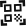

Destacado
¿Lista para tu próxima aventura?
Tu progreso
Nivel

¡Buscá los QR y escanealos para subir de nivel!
¿Lista para tu próxima aventura?
Tu progreso
Nivel

¡Buscá los QR y escanealos para subir de nivel!